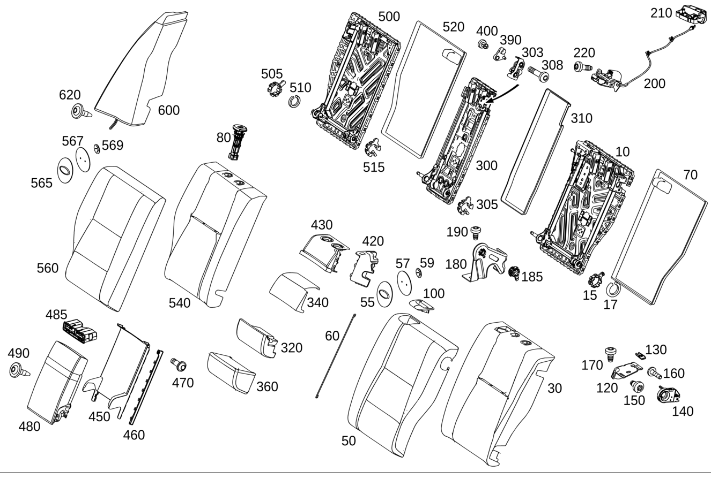

| № | Артикул | Название | Кол. | Примечание |
|---|---|---|---|---|
| 10 | A 205 920 01 32 | Рама спинки (BACKREST FRAME) | 1 | Слева |
| 15 | A 205 920 39 06 | - Поворотная опора (PIVOT BEARING) | 1 | Снаружи слева |
| 17 | A 205 920 43 06 | - Поворотная опора (PIVOT BEARING) | 1 | Снаружи слева |
| 30 | A 205 920 11 16 | Накладка спинки сиденья (PADDING, RR SEAT BACKREST) | 1 | Слева |
| 30 | A 205 920 13 16 | Накладка спинки сиденья (PADDING, RR SEAT BACKREST) | 1 | Слева |
| 30 | A 205 920 95 01 | Накладка спинки сиденья (PADDING, RR SEAT BACKREST) | 1 | Слева |
| 30 | A 205 920 13 16 | Накладка спинки сиденья (PADDING, RR SEAT BACKREST) | 1 | Слева |
| 30 | A 205 920 95 01 | Накладка спинки сиденья (PADDING, RR SEAT BACKREST) | 1 | Слева |
| 30 | A 205 920 81 02 | Накладка спинки сиденья | 1 | Слева |
| 30 | A 205 920 91 03 | Накладка спинки сиденья | 1 | Слева |
| 50 | A 205 920 03 60 | Обивка спинки сиденья (OUTER COV., RR SEAT BACKR) | 1 | Слева |
| 50 | A 205 920 61 08 | Обивка спинки сиденья (OUTER COV., RR SEAT BACKR) | 1 | Слева |
| 50 | A 205 920 27 60 | Обивка спинки сиденья (OUTER COV., RR SEAT BACKR) | 1 | Слева |
| 50 | A 205 920 27 60 | Обивка спинки сиденья (OUTER COV., RR SEAT BACKR) | 1 | Слева |
| 50 | A 205 920 23 60 | Обивка спинки сиденья (OUTER COV., RR SEAT BACKR) | 1 | Слева |
| 50 | A 205 920 16 00 | Обивка спинки сиденья (OUTER COV., RR SEAT BACKR) | 1 | Слева |
| 50 | A 205 920 35 60 | Обивка спинки сиденья | 1 | Слева |
| 50 | A 205 920 19 06 | Обивка спинки сиденья | 1 | Слева |
| 50 | A 205 920 89 05 | Обивка спинки сиденья (OUTER COV., RR SEAT BACKR) | 1 | Слева |
| 50 | A 205 920 21 60 | Обивка спинки сиденья (OUTER COV., RR SEAT BACKR) | 1 | Слева |
| 50 | A 205 920 76 04 | Обивка спинки сиденья (OUTER COV., RR SEAT BACKR) | 1 | Слева |
| 50 | A 205 920 35 12 | Обивка спинки сиденья (OUTER COV., RR SEAT BACKR) | 1 | Слева |
| 50 | A 205 920 29 60 | Обивка спинки сиденья (OUTER COV., RR SEAT BACKR) | 1 | Слева |
| 50 | A 205 920 98 03 | Обивка спинки сиденья (OUTER COV., RR SEAT BACKR) | 1 | Слева |
| 50 | A 205 920 39 04 | Обивка спинки сиденья | 1 | Слева |
| 50 | A 205 920 87 05 | Обивка спинки сиденья (OUTER COV., RR SEAT BACKR) | 1 | Слева |
| 50 | A 205 920 00 04 | Обивка спинки сиденья | 1 | Слева |
| 50 | A 205 920 41 04 | Обивка спинки сиденья | 1 | Слева |
| 50 | A 205 920 35 06 | Обивка спинки сиденья (OUTER COV., RR SEAT BACKR) | 1 | Слева |
| 50 | A 205 920 04 04 | Обивка спинки сиденья | 1 | Слева |
| 50 | A 205 920 19 06 | Обивка спинки сиденья | 1 | Слева |
| 50 | A 205 920 85 11 | Обивка спинки сиденья (OUTER COV., RR SEAT BACKR) | 1 | Слева |
| 50 | A 205 920 83 11 | Обивка спинки сиденья | 1 | Слева |
| 55 | A 221 810 02 69 | - Табличка | 1 | Слева |
| 57 | A 221 912 00 14 | - Держатель (HOLDER) | 1 | Слева |
| 59 | N 912010 006000 | - Стопорная шайба (RETAINING WASHER) | 2 | Слева; 6 MM |
| 60 | A 463 924 21 29 | Скоба (BRACKET) | 1 | Боковой валик, левое сиденье; 185 MM |
| 60 | A 463 924 21 29 | Скоба (BRACKET) | 1 | Боковой валик, левое сиденье; 185 MM |
| 60 | A 463 924 21 29 | Скоба (BRACKET) | 1 | Боковой валик, правое сиденье; 185 MM |
| 60 | A 463 924 21 29 | Скоба (BRACKET) | 1 | Боковой валик, правое сиденье; 185 MM |
| 60 | A 126 914 01 29 | Скоба (BRACKET) | 1 | Продольная прошивка, снаружи левое сиденье; 340 MM |
| 60 | A 126 914 01 29 | Скоба (BRACKET) | 1 | Продольная прошивка, снаружи правое сиденье; 340 MM |
| 60 | A 123 924 20 29 | Скоба (BRACKET) | 1 | Продольная прошивка, изнутри левое сиденье; 490MM |
| 60 | A 123 924 20 29 | Скоба (BRACKET) | 1 | Продольная прошивка, изнутри правое сиденье; 490MM |
| 70 | A 205 924 01 63 | Обивка спинки сиденья | 1 | Слева |
| 80 | A 000 970 11 41 | Направляющая подголовника (HEAD RESTRAINT GUIDE) | 1 | Без разблокировки левого сиденья |
| 80 | A 000 970 10 41 | Направляющая подголовника (HEAD RESTRAINT GUIDE) | 1 | С разблокировкой левого сиденья |
| 80 | A 000 970 11 41 | Направляющая подголовника (HEAD RESTRAINT GUIDE) | 1 | Без разблокировки, посередине |
| 80 | A 000 970 10 41 | Направляющая подголовника (HEAD RESTRAINT GUIDE) | 1 | С разблокировкой посередине |
| 80 | A 000 970 11 41 | Направляющая подголовника (HEAD RESTRAINT GUIDE) | 1 | Без разблокировки правого сиденья |
| 80 | A 000 970 10 41 | Направляющая подголовника (HEAD RESTRAINT GUIDE) | 1 | С разблокировкой правого сиденья |
| 100 | A 205 923 00 22 | Облицовка рамы спинки | 1 | Выход ремня безопасности |
| 120 | A 205 920 01 24 | Поворотная опора (PIVOT BEARING) | 1 | Снаружи слева |
| 120 | A 205 920 02 24 | Поворотная опора (PIVOT BEARING) | 1 | Снаружи справа |
| 130 | A 003 991 86 70 | Пружинная скоба (SPRING CLIP) | 1 | Поворотная опора, слева |
| 130 | A 003 991 86 70 | Пружинная скоба (SPRING CLIP) | 1 | Поворотная опора, справа |
| 140 | A 205 820 05 10 | Концевой выключатель (LIMIT SWITCH) | 1 | Блокировка спинки слева |
| 140 | A 205 820 05 10 | Концевой выключатель (LIMIT SWITCH) | 1 | Блокировка спинки справа |
| 150 | N 000000 005053 | Винт с 6-гранной головкой (HEXAGON HEAD BOLT) | 1 | Опора к раме спинки слева; M10X20 |
| 150 | N 000000 005053 | Винт с 6-гранной головкой (HEXAGON HEAD BOLT) | 1 | Опора к раме спинки справа; M10X20 |
| 160 | A 000 991 00 33 | Заклепка (RIVET) | 1 | Выключатель к опоре слева |
| 160 | A 000 991 00 33 | Заклепка (RIVET) | 1 | Выключатель к опоре справа |
| 170 | N 000000 002213 | Винт с 6-гр. глвк (HEXALOBULAR SCREW) | 1 | Опора снаружи к днищу в задней части кузова слева |
| 170 | N 000000 001434 | Винт с 6-гр. глвк (HEXALOBULAR SCREW) | 1 | Опора снаружи к днищу в задней части кузова слева; M10X20 |
| 170 | N 000000 002213 | Винт с 6-гр. глвк (HEXALOBULAR SCREW) | 1 | Опора снаружи к днищу в задней части кузова справа |
| 170 | N 000000 001434 | Винт с 6-гр. глвк (HEXALOBULAR SCREW) | 1 | Опора снаружи к днищу в задней части кузова справа; M10X20 |
| 180 | A 205 920 23 14 | Поворотная опора (PIVOT BEARING) | 1 | Посередине, левое сиденье |
| 180 | A 205 920 03 24 | Поворотная опора (PIVOT BEARING) | 1 | Посередине правого сиденья |
| 180 | A 205 920 03 24 | Поворотная опора (PIVOT BEARING) | 1 | Посередине, левое сиденье |
| 180 | A 205 920 23 14 | Поворотная опора (PIVOT BEARING) | 1 | Посередине правого сиденья |
| 185 | A 205 920 41 06 | - Поворотная опора (PIVOT BEARING) | 1 | Посередине, левое сиденье |
| 185 | A 205 920 41 06 | - Поворотная опора (PIVOT BEARING) | 1 | Посередине |
| 190 | N 000000 002213 | Винт с 6-гр. глвк (HEXALOBULAR SCREW) | 2 | Опора посередине к днищу в задней части кузова слева |
| 190 | N 000000 001434 | Винт с 6-гр. глвк (HEXALOBULAR SCREW) | 2 | Опора посередине к днищу в задней части кузова слева; M10X20 |
| 190 | N 000000 002213 | Винт с 6-гр. глвк (HEXALOBULAR SCREW) | 2 | Опора посередине к днищу в задней части кузова |
| 190 | N 000000 001434 | Винт с 6-гр. глвк (HEXALOBULAR SCREW) | 2 | Опора посередине к днищу в задней части кузова; M10X20 |
| 200 | A 205 920 04 76 | Фиксатор спинки сиденья (LOCK FOR SEAT BACKREST) | 1 | Спинка заднего сиденья слева |
| 200 | A 205 920 04 76 | Фиксатор спинки сиденья (LOCK FOR SEAT BACKREST) | 1 | Спинка заднего сиденья справа |
| 210 | A 205 920 49 00 | Ручка разблокировки (RELEASE HANDLE) | 1 | Слева |
| 210 | A 205 920 50 00 | Ручка разблокировки (RELEASE HANDLE) | 1 | Справа |
| 220 | N 000000 001428 | Винт с 6-гр. глвк (HEXALOBULAR SCREW) | 2 | Блокирующее устройство к поперечине, слева; M8X25-8.8 |
| 220 | N 000000 001428 | Винт с 6-гр. глвк (HEXALOBULAR SCREW) | 2 | Блокирующее устройство к поперечине, справа; M8X25-8.8 |
| 300 | A 205 920 00 32 | Рама спинки (BACKREST FRAME) | 1 | Посередине |
| 303 | A 205 920 00 76 | - Фиксатор спинки сиденья (LOCK FOR SEAT BACKREST) | 1 | Спинка заднего сиденья посередине |
| 305 | A 205 920 40 06 | - Поворотная опора (PIVOT BEARING) | 1 | Посередине слева |
| 308 | N 000000 006381 | - Винт с 6-гр. глвк (HEXALOBULAR SCREW) | 2 | Крепление замка; M8X35 |
| 310 | A 205 924 00 63 | Обивка спинки сиденья | 1 | Посередине |
| 320 | A 205 920 20 16 | Накладка спинки сиденья (PADDING, RR SEAT BACKREST) | 1 | Посередине снизу |
| 340 | A 205 920 02 60 | Обивка спинки сиденья (OUTER COV., RR SEAT BACKR) | 1 | Посередине сверху |
| 340 | A 205 920 60 08 | Обивка спинки сиденья (OUTER COV., RR SEAT BACKR) | 1 | Посередине сверху |
| 340 | A 205 920 25 60 | Обивка спинки сиденья (OUTER COV., RR SEAT BACKR) | 1 | Посередине сверху |
| 340 | A 205 920 25 60 | Обивка спинки сиденья (OUTER COV., RR SEAT BACKR) | 1 | Посередине сверху |
| 340 | A 205 920 06 60 | Обивка спинки сиденья (OUTER COV., RR SEAT BACKR) | 1 | Посередине сверху |
| 340 | A 205 920 06 60 | Обивка спинки сиденья (OUTER COV., RR SEAT BACKR) | 1 | Посередине сверху |
| 340 | A 205 920 25 60 | Обивка спинки сиденья (OUTER COV., RR SEAT BACKR) | 1 | Посередине сверху |
| 340 | A 205 920 75 04 | Обивка спинки сиденья | 1 | Посередине сверху |
| 340 | A 205 920 25 60 | Обивка спинки сиденья (OUTER COV., RR SEAT BACKR) | 1 | Посередине сверху |
| 360 | A 205 920 20 60 | Обивка спинки сиденья (OUTER COV., RR SEAT BACKR) | 1 | Посередине снизу |
| 360 | A 205 920 63 08 | Обивка спинки сиденья (OUTER COV., RR SEAT BACKR) | 1 | Посередине снизу |
| 360 | A 205 920 26 60 | Обивка спинки сиденья | 1 | Посередине снизу |
| 360 | A 205 920 26 60 | Обивка спинки сиденья | 1 | Посередине снизу |
| 360 | A 205 920 33 60 | Обивка спинки сиденья | 1 | Посередине снизу |
| 360 | A 205 920 33 60 | Обивка спинки сиденья | 1 | Посередине снизу |
| 360 | A 205 920 26 60 | Обивка спинки сиденья | 1 | Посередине снизу |
| 360 | A 205 920 74 04 | Обивка спинки сиденья (OUTER COV., RR SEAT BACKR) | 1 | Посередине снизу |
| 360 | A 205 920 26 60 | Обивка спинки сиденья | 1 | Посередине снизу |
| 390 | A 205 929 00 00 | Рычаг регулировки спинки | 1 | Блокировка посередине |
| 400 | A 205 933 00 23 | Соединительная тяга (LINK ROD) | 1 | Блокировка посередине |
| 420 | A 205 923 00 05 | Накладка ручки | 1 | Разблокировка |
| 430 | A 205 920 23 01 | Облицовка рамы спинки | 1 | Рама спинки сверху |
| 430 | A 205 920 23 01 | Облицовка рамы спинки | 1 | Рама спинки сверху |
| 450 | A 205 973 03 89 | Накладка подлокотника (COVER, ARMREST) | 1 | Ниша подлокотника |
| 460 | A 205 973 01 89 | Накладка подлокотника | 1 | Ниша подлокотника слева |
| 460 | A 205 973 02 89 | Накладка подлокотника | 1 | Ниша подлокотника справа |
| 470 | A 001 984 56 29 | Болт с головкой торкс (HEXALOBULAR BOLT) | 2 | Крепление облицовки; 4X12 |
| 480 | A 205 970 00 01 | Подлокотник | 1 | С возможностью откидывания |
| 480 | A 205 970 02 01 | Подлокотник (ARMREST) | 1 | С возможностью откидывания |
| 480 | A 205 970 25 00 | Подлокотник, откидной | 1 | Вариант 1 |
| 480 | A 205 970 25 00 | Подлокотник, откидной | 1 | Вариант 1 |
| 480 | A 205 970 01 01 | Подлокотник (ARMREST) | 1 | С возможностью откидывания |
| 480 | A 205 970 24 00 | Подлокотник, откидной | 1 | Модификация 2 |
| 480 | A 205 970 24 00 | Подлокотник, откидной | 1 | Модификация 2 |
| 480 | A 205 970 02 01 | Подлокотник (ARMREST) | 1 | С возможностью откидывания |
| 480 | A 205 970 25 00 | Подлокотник, откидной | 1 | Вариант 1 |
| 480 | A 205 970 06 00 | Подлокотник | 1 | |
| 480 | A 205 970 02 01 | Подлокотник (ARMREST) | 1 | С возможностью откидывания |
| 485 | A 099 810 02 13 | Подстаканник | 1 | Подлокотник |
| 490 | A 001 984 43 29 | Винт Torx с полукр. гол. (PAN HEAD SCREW) | 2 | Крепление подлокотника; M6X14 |
| 500 | A 205 920 02 32 | Рама спинки (BACKREST FRAME) | 1 | Справа |
| 505 | A 205 920 39 06 | - Поворотная опора (PIVOT BEARING) | 1 | Справа снаружи |
| 510 | A 205 920 43 06 | - Поворотная опора (PIVOT BEARING) | 1 | Стяжное кольцо |
| 515 | A 205 920 40 06 | - Поворотная опора (PIVOT BEARING) | 1 | Справа изнутри |
| 520 | A 205 924 02 63 | Обивка спинки сиденья | 1 | Справа |
| 540 | A 205 920 12 16 | Накладка спинки сиденья (PADDING, RR SEAT BACKREST) | 1 | Справа |
| 540 | A 205 920 14 16 | Накладка спинки сиденья (PADDING, RR SEAT BACKREST) | 1 | Справа |
| 540 | A 205 920 96 01 | Накладка спинки сиденья (PADDING, RR SEAT BACKREST) | 1 | Справа |
| 540 | A 205 920 14 16 | Накладка спинки сиденья (PADDING, RR SEAT BACKREST) | 1 | Справа |
| 540 | A 205 920 96 01 | Накладка спинки сиденья (PADDING, RR SEAT BACKREST) | 1 | Справа |
| 540 | A 205 920 82 02 | Накладка спинки сиденья | 1 | Справа |
| 540 | A 205 920 92 03 | Накладка спинки сиденья | 1 | Справа |
| 560 | A 205 920 04 60 | Обивка спинки сиденья (OUTER COV., RR SEAT BACKR) | 1 | Справа |
| 560 | A 205 920 62 08 | Обивка спинки сиденья (OUTER COV., RR SEAT BACKR) | 1 | Справа |
| 560 | A 205 920 28 60 | Обивка спинки сиденья | 1 | Справа |
| 560 | A 205 920 28 60 | Обивка спинки сиденья | 1 | Справа |
| 560 | A 205 920 28 60 | Обивка спинки сиденья | 1 | Справа |
| 560 | A 205 920 24 60 | Обивка спинки сиденья (OUTER COV., RR SEAT BACKR) | 1 | Справа |
| 560 | A 205 920 18 00 | Обивка спинки сиденья | 1 | Справа |
| 560 | A 205 920 36 60 | Обивка спинки сиденья | 1 | Справа |
| 560 | A 205 920 99 05 | Обивка спинки сиденья (OUTER COV., RR SEAT BACKR) | 1 | Справа |
| 560 | A 205 920 22 60 | Обивка спинки сиденья (OUTER COV., RR SEAT BACKR) | 1 | Справа |
| 560 | A 205 920 78 04 | Обивка спинки сиденья | 1 | Справа |
| 560 | A 205 920 36 12 | Обивка спинки сиденья (OUTER COV., RR SEAT BACKR) | 1 | Справа |
| 560 | A 205 920 30 60 | Обивка спинки сиденья (OUTER COV., RR SEAT BACKR) | 1 | Справа |
| 560 | A 205 920 14 04 | Обивка спинки сиденья | 1 | Справа |
| 560 | A 205 920 35 04 | Обивка спинки сиденья | 1 | Справа |
| 560 | A 205 920 97 05 | Обивка спинки сиденья (OUTER COV., RR SEAT BACKR) | 1 | Справа |
| 560 | A 205 920 16 04 | Обивка спинки сиденья | 1 | Справа |
| 560 | A 205 920 37 04 | Обивка спинки сиденья | 1 | Справа |
| 560 | A 205 920 28 06 | Обивка спинки сиденья | 1 | Справа |
| 560 | A 205 920 20 04 | Обивка спинки сиденья | 1 | Справа |
| 560 | A 205 920 20 06 | Обивка спинки сиденья | 1 | Справа |
| 560 | A 205 920 86 11 | Обивка спинки сиденья (OUTER COV., RR SEAT BACKR) | 1 | Справа |
| 560 | A 205 920 84 11 | Обивка спинки сиденья (OUTER COV., RR SEAT BACKR) | 1 | Справа |
| 565 | A 221 810 02 69 | - Табличка | 1 | Справа |
| 567 | A 221 912 00 14 | - Держатель (HOLDER) | 1 | Справа |
| 569 | N 912010 006000 | - Стопорная шайба (RETAINING WASHER) | 2 | Справа; 6 MM |
| 600 | A 205 920 05 03 | Спинка заднего сиденья (REAR SEAT BACKREST) | 1 | Снаружи слева |
| 600 | A 205 920 21 00 | Спинка заднего сиденья (REAR SEAT BACKREST) | 1 | Снаружи слева |
| 600 | A 205 920 21 00 | Спинка заднего сиденья (REAR SEAT BACKREST) | 1 | Снаружи слева |
| 600 | A 205 920 25 00 | Спинка заднего сиденья (REAR SEAT BACKREST) | 1 | Снаружи слева |
| 600 | A 205 920 53 05 | Спинка заднего сиденья | 1 | Снаружи слева |
| 600 | A 205 920 53 05 | Спинка заднего сиденья | 1 | Снаружи слева |
| 600 | A 205 920 06 03 | Спинка заднего сиденья | 1 | Снаружи справа |
| 600 | A 205 920 22 00 | Спинка заднего сиденья | 1 | Снаружи справа |
| 600 | A 205 920 22 00 | Спинка заднего сиденья | 1 | Снаружи справа |
| 600 | A 205 920 26 00 | Спинка заднего сиденья (REAR SEAT BACKREST) | 1 | Снаружи справа |
| 600 | A 205 920 54 05 | Спинка заднего сиденья (REAR SEAT BACKREST) | 1 | Снаружи справа |
| 600 | A 205 920 54 05 | Спинка заднего сиденья (REAR SEAT BACKREST) | 1 | Снаружи справа |
| 620 | A 000 990 75 11 | Винт с сфероцил. головкой (PAN HEAD SCREW) | 1 | Крепление спинки заднего сиденья снаружи слева; M5X18 |
| 620 | A 000 990 75 11 | Винт с сфероцил. головкой (PAN HEAD SCREW) | 1 | Крепление спинки заднего сиденья снаружи справа; M5X18 |
Позиций: 180 · подписано на схемах: 180 · колесо — плавный зум в курсор, перетаскивание — пан, двойной клик — зум, клик по артикулу — скопировать.